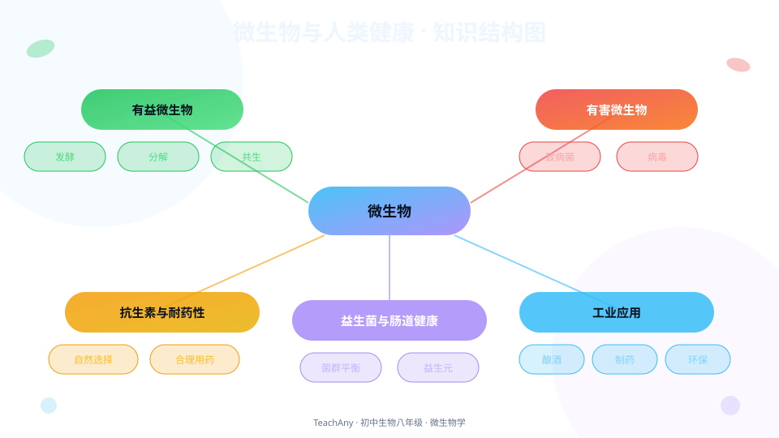

Interactive Canvas
🧪 抗生素耐药性模拟实验
点击"施加抗生素"观察细菌群体的变化。调节"疗程完成率"看看不完成疗程会怎样。
代数: 0 | 总菌数: 50 | 耐药比例: ~10%
微生物既能让人生病,也能帮人制药、发酵面包--它们到底是敌是友?

先选一个你关心的问题。后面的例子、提示和 AI 学伴都会围绕这个问题来帮你推进。
选择或输入后,本课会围绕你的问题展开。
感冒了,医生不给开抗生素。以下哪个解释是正确的?
已经知道:微生物能引起传染病,是"坏东西"
但是问题是:酸奶、面包、酱油全靠微生物制成,没有它们人类活不下去
所以这一段要解决:认识微生物"有益"的三大角色--发酵者、分解者、共生者
酵母菌将糖分解为酒精和CO2(制面包、酿酒);乳酸菌将乳糖转化为乳酸(制酸奶、泡菜)。
腐生菌分解动植物遗体,将有机物转化为无机盐,归还土壤。没有它们,落叶会堆成山。
根瘤菌与豆科植物共生,固定空气中的氮;肠道菌群帮助消化、合成维生素K和B族。
结核杆菌→肺结核;痢疾杆菌→细菌性痢疾;幽门螺杆菌→胃溃疡。细菌有细胞结构,可被抗生素杀死。
流感病毒、新冠病毒、HIV。病毒没有细胞结构,必须寄生在活细胞内才能繁殖,抗生素对其无效。
细菌 = 有细胞壁、能独立生活
病毒 = 无细胞结构、必须寄生
→ 这决定了治疗手段的根本不同
已经知道:1928年弗莱明发现青霉素,抗生素拯救了无数生命
但是问题是:"超级细菌"不断出现,曾经的"万能药"正在失效
所以这一段要解决:理解耐药性产生的自然选择机制,学会合理用药
抗生素通过破坏细菌细胞壁或抑制蛋白质合成来杀菌。对病毒无效(病毒无细胞壁)。
细菌群体中存在自然变异→部分个体天生耐药→抗生素杀死敏感菌→耐药菌存活并大量繁殖→自然选择。
1 遵医嘱,不自行购买
2 按疗程服完,不提前停药
3 不把抗生素当"消炎药"随便吃
点击"施加抗生素"观察细菌群体的变化。调节"疗程完成率"看看不完成疗程会怎样。
人体肠道有约100万亿微生物,重约1.5kg,含有益菌、有害菌和中性菌。
1 促进营养吸收
2 抑制有害菌生长
3 合成维生素K、B12
4 训练免疫系统
益生菌=有益活菌(酸奶)
益生元=喂养益生菌的纤维(洋葱/香蕉)
两者搭配效果最佳。
酿酒(酵母菌)、制醋(醋酸菌)、酿造酱油(曲霉)、制作奶酪(乳酸菌)。利用微生物的代谢产物。
青霉素(青霉菌)、链霉素(放线菌)、胰岛素(基因工程大肠杆菌)、干扰素(基因工程酵母)。
活性污泥法:利用微生物分解污水中有机物。堆肥:微生物将垃圾变为有机肥。生物修复:分解石油污染。
微生物的耐药性来源于基因突变。用PhET模拟器探索DNA如何转录为mRNA,再翻译为蛋白质。
💡 拖动RNA聚合酶到DNA上,观察转录过程。思考:如果基因发生突变,蛋白质会怎样变化?
青霉素是第一种被发现的抗生素。旋转3D模型,观察其β-内酰胺环结构--这正是它破坏细菌细胞壁的"武器"。
💡 拖拽旋转分子,滚轮缩放。蓝色=氮,红色=氧,黄色=硫,灰色=碳。
经过多次抗生素治疗后,某种细菌变得"刀枪不入"。耐药性产生的根本原因是:
将以下微生物分为"有益"和"有害"两类:
酵母菌、结核杆菌、乳酸菌、流感病毒、根瘤菌、痢疾杆菌
小明的奶奶用新鲜牛奶自制酸奶,步骤如下:加热牛奶→冷却到40°C→加入少量酸奶→保温8小时。请解释每一步的生物学原理。
设计一个实验方案,验证"不完成抗生素疗程会加速耐药性产生"。写出假设、变量、步骤和预期结果。
正解:抗生素只对细菌有效。病毒没有细胞壁和核糖体,抗生素的攻击靶点不存在。感冒、流感大多是病毒引起的,不该用抗生素。
正解:绝大多数细菌对人体无害甚至有益。人体肠道中约有1000种细菌,其中大部分是有益菌或中性菌。只有少数致病菌才会引起疾病。
正解:是细菌产生耐药性,不是人体。机制是自然选择:抗生素杀死敏感菌,耐药变异个体存活繁殖,后代大部分耐药。
正解:益生菌 = 活的有益微生物(如乳酸菌);益生元 = 不能被人体消化但能喂养益生菌的膳食纤维(如菊粉、低聚果糖)。
以下哪种做法有助于减缓抗生素耐药性的发展?
小红嗓子疼去看医生,医生做了咽拭子检查后说"是病毒性咽炎",没有开抗生素。小红的妈妈很不满意。如果你是小红,你会怎么解释?
抗生素耐药性本质上是自然选择在微观层面的体现。
从细菌的视角,耐药是"生存策略"而非"学习"。
同理,农药抗性、杀虫剂抗性也是自然选择的结果。
患者觉得"好了就停药"可以理解,但后果很严重。
全球每年约70万人死于耐药菌感染,这是公共卫生危机。
微生物既非纯粹的敌人，也非纯粹的朋友。它们与人类的关系取决于种类、数量和我们的行为。
本节点的前置、后续和同域知识由标准知识图谱模块自动渲染。